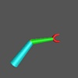

The following script creates a robot arm using OOGL's hierarchical objects and StageManager's

Hierarchical Objects in StageManager:Geometrycommand. The arm is then manipulated using theScriptcommand to transform several components of the arm at once. The Geomview files that are used to create the compound object were generated using the CenterStage fileArm.cs.Note the use of
-appearanceand-transformflags to modify the positions and styles of the objects. Also, note the use of theUntilandCuecommands to synchronize the actions between the various scripts.The files needed for the compound object are:
Arm1.oogl,Arm2.oogl,Claw.oogl, anddodec.off(which is part of the standard object library for Geomview).
Arm.sm
Geometry build Arm { {Major < Arm1.oogl} {Minor { { < Arm2.oogl} { < dodec.off -transform {Scale .09} -appearance { material { *ambient 1 1 0 *diffuse 1 1 0 }} } {Claw { { < Claw.oogl} { < Claw.oogl -transform {Scale {1 -1 1}} } } -transform {Translate {0 0 1.5}} } } -transform {Translate {0 0 2}} } } -appearance {*shading smooth} Transform {Translate {-.7 -.7 0}} Transform {Scale .4} Transform {YZ -$pi/2} Transform {XY $pi/2} Script for Arm { Pause 3 Until Done Sequence {YZ $pi/3} } Script for Arm/Minor { Until Open Sequence {YZ $pi/3} Until Done Sequence {YZ -$pi/4} } Script group Claw \ Arm/Minor/Claw/1 Arm/Minor/Claw/2 Script for Claw { Sequence {YZ $pi/6} 8 Cue Open +4 Sequence {XY $pi} 8 Arm/Minor/Claw Sequence {YZ -$pi/6} 8 Cue Done } Pause 3 Script action Pause 3 Delete World Pause 5
|
|